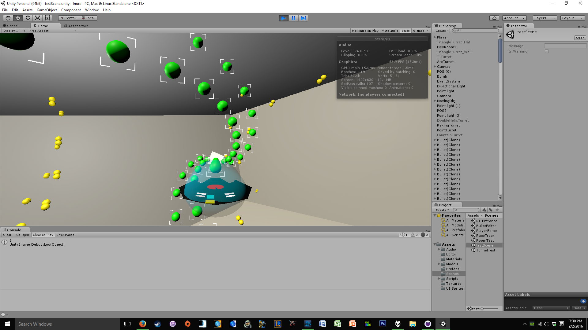
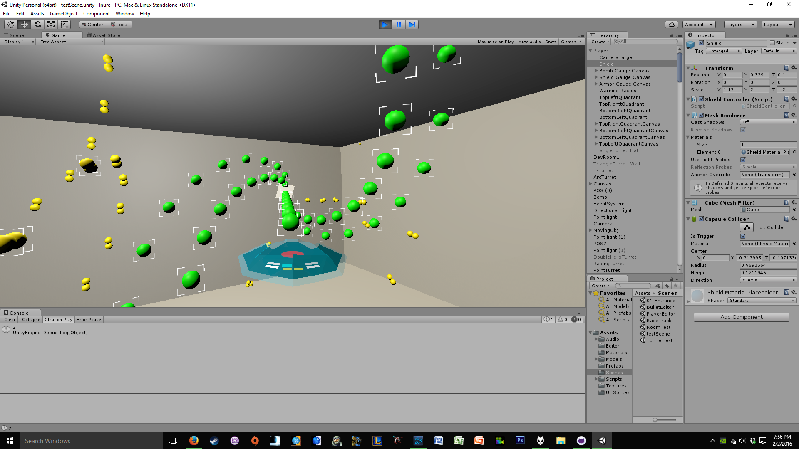
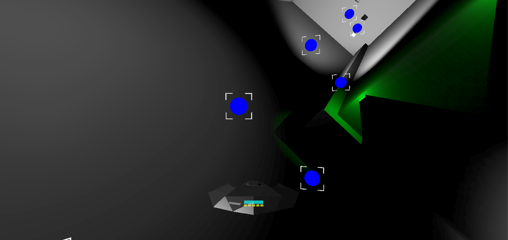
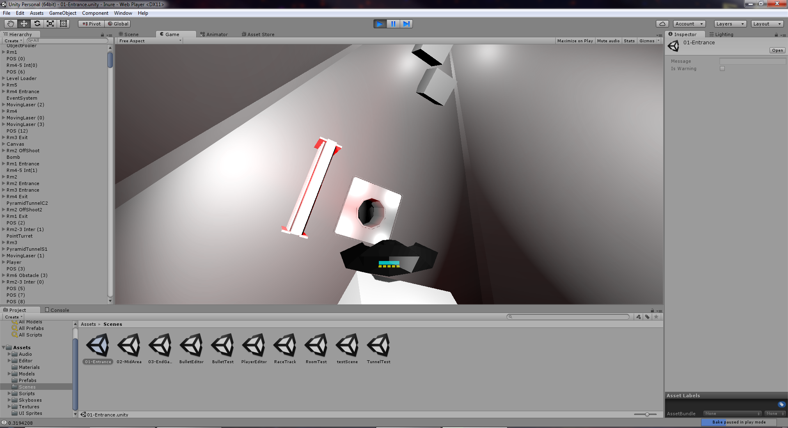
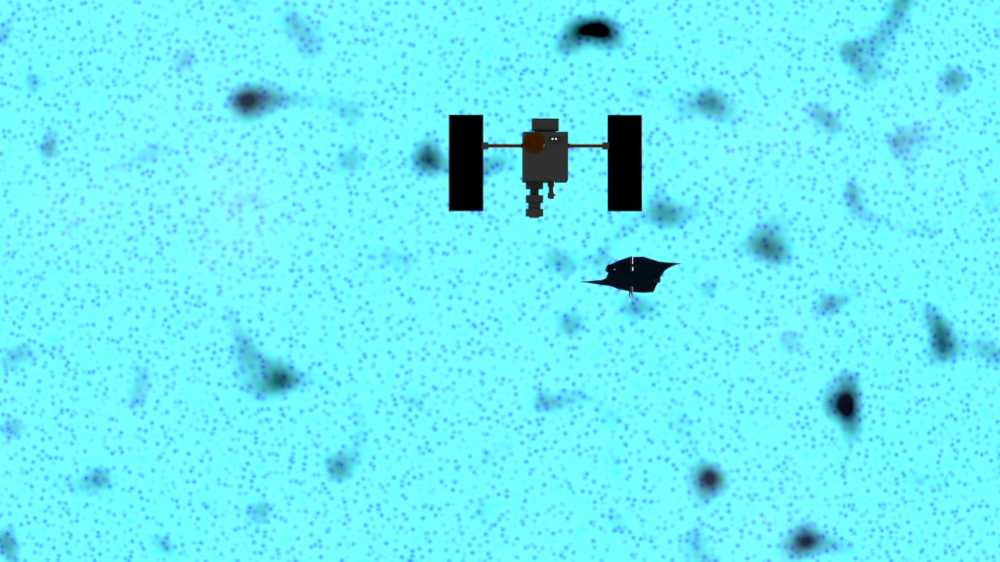
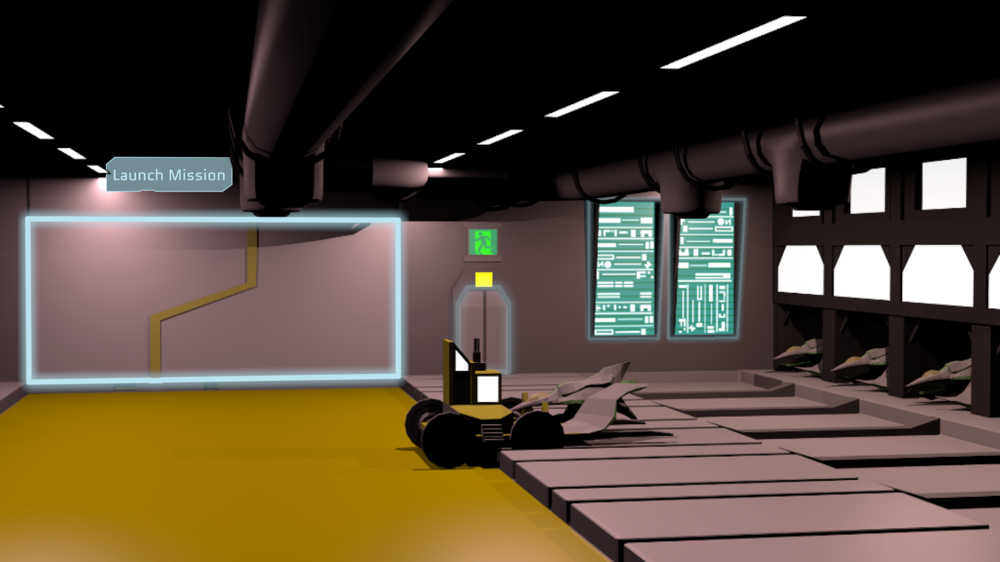
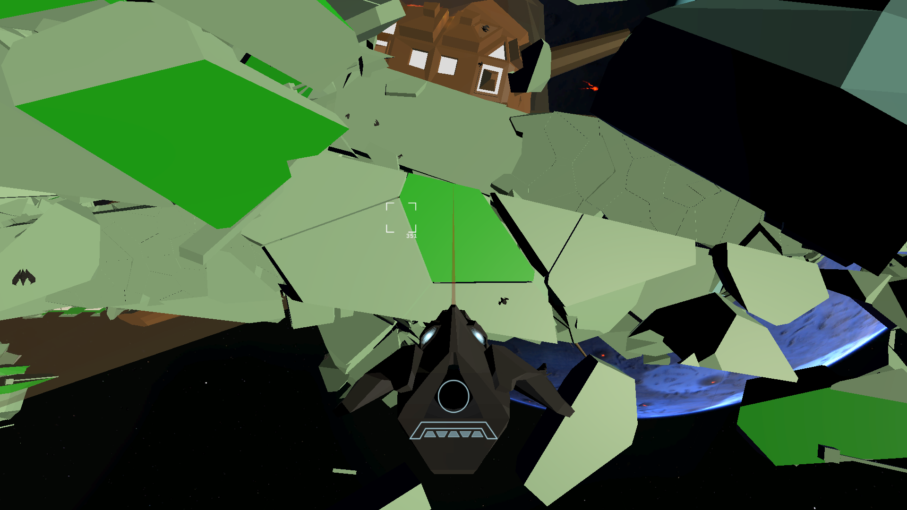
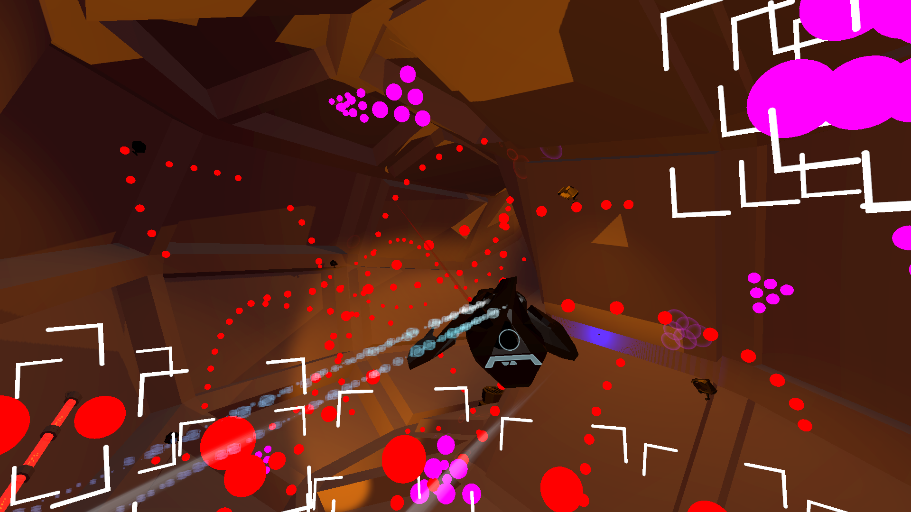
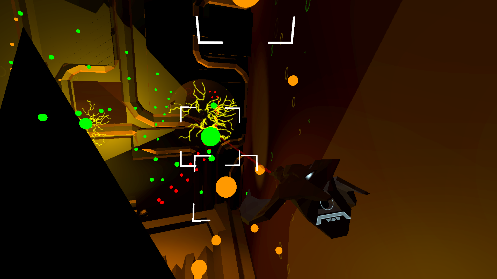

Inure Prototyping and Development
Original Digital Prototype
-
Camera testing in the original prototype for Inure.
-
Shield system prototyping for Inure.
-
Shields running out and causing death in the final version of the Inure prototype that also included some basic bullet patterns.
Early Production
-

The first pass at a diagetic HUD during production. Includes "rear view mirrors" that were later removed in development due to a lack of use.
-

Updated HUD and shield effects that still include the rear view mirrors.
-

Increased shipt hull integrity and lighting test.
-

Area exit example and more lighting tests.
Final Version
-

The first shot in the opening cinematic featuring the dreadnought against a star with a satellite in the foreground.
-

The hangar that serves as the game's main menu and is heavily inspired by similar menus in FreeSpace and Star Wars TIE Fighter.
-

The exterior section of the game featuring large amounts of debris from the destroyed fleet as described in the mission briefing.
-

The first area inside the dreadnought featuring both static and targeted bullet patterns.
-

The second area inside the dreadnought featuring more complex geometry as well as non-bullet hazards like the EMP generators.